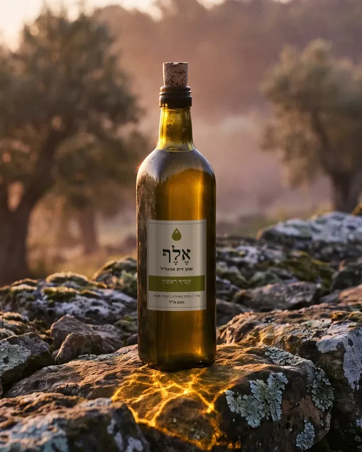

מה זה בכלל "כתית מעולה"
שמן זית כתית מעולה הוא השמן הטוב ביותר שאפשר להפיק מזיתים. הוא מופק רק בדרך מכנית, בלי חימום ובלי חומרים כימיים, והוא צריך לעמוד בשני מבחנים: בדיקה במעבדה ובדיקת טעם.
במעבדה בודקים בעיקר את החומציות החופשית, שצריכה להיות עד 0.8%, ואת ערך הפרוקסיד, שמעיד על חמצון. בטעימה, פאנל של טועמים מיומנים צריך למצוא בשמן פירותיות, ולא למצוא בו אף פגם. שמן שעבר את המעבדה אבל יש לו טעם של עובש או של חומץ לא נחשב כתית מעולה.
המילה "כתית" עצמה עתיקה מאוד. בספר שמות נאמר "שֶׁמֶן זַיִת זָךְ כָּתִית לַמָּאוֹר", כלומר שמן מזיתים שנכתשו, שהוא הראשון והנקי ביותר.
כתית מעולה, כתית, "שמן זית" ושמן פומס
על המדף יש כמה סוגים של שמן זית, והשמות מבלבלים. זה ההבדל ביניהם:
| סוג | איך מפיקים | מתי מתאים |
|---|---|---|
| כתית מעולה | מיצוי מכני בלבד, חומציות עד 0.8%, בלי פגמים בטעם | לכל דבר, ובעיקר כשרוצים להרגיש את השמן |
| כתית | מיצוי מכני, חומציות עד 2%, פגמים קלים מותרים | לבישול, כשהטעם פחות חשוב |
| שמן זית (או "לייט") | תערובת של שמן מזוקק ומעט שמן כתית | טעם ניטרלי. "לייט" מתייחס לטעם, לא לקלוריות |
| שמן גפת (פומס) | מופק בממיסים משאריות הזיתים אחרי הכתישה | תעשייה וטיגון בכמויות גדולות |
חמישה דברים לבדוק על הבקבוק
- תאריך קטיף. שמן זית הוא מיץ של פרי, והוא במיטבו בשנה הראשונה אחרי הקטיף. תאריך התפוגה לבד לא מספר כמה זמן השמן כבר עומד. יצרנים טובים מדפיסים את שנת הקטיף על התווית.
- בקבוק כהה או פח. אור מקלקל שמן זית מהר. זכוכית ירוקה כהה, חומה או פח אטום שומרים עליו. בקבוק שקוף שעומד מתחת לפלורסנט בסופר הוא סימן לא טוב.
- זן ומקור. כשכתוב מאיזה זן השמן ומאיזה אזור, קל יותר לדעת למה לצפות. "תערובת שמנים ממדינות שונות" אומרת שהשמן עבר דרך ארוכה עד הבקבוק.
- תוצאות מעבדה. יצרנים שבודקים כל אצווה מפרסמים לרוב חומציות ופוליפנולים. חומציות נמוכה מ-0.3% וכמות גבוהה של פוליפנולים הן סימן לזיתים בריאים שנכתשו מהר.
- גודל שמתאים לקצב שלכם. בקבוק פתוח כדאי לגמור תוך כשלושה חודשים. משפחה שמבשלת הרבה יכולה לקנות פח. מי שמשתמש בשמן רק לסלטים ירוויח מבקבוק קטן.
איך טועמים שמן זית בבית
אין צורך בכלים מיוחדים. מוזגים כף שמן לכוס קטנה, מחממים אותה רגע בכף היד ומריחים. שמן טרי מריח כמו עשב קצוץ, עלה עגבנייה, ארטישוק או תפוח ירוק.
אחר כך לוגמים מעט, שואפים אוויר דרך השיניים ובולעים. מרירות קלה בלשון ועקצוץ בגרון הם סימן טוב: הם מגיעים מהפוליפנולים, נוגדי החמצון של הזית, ויש אותם רק בשמן טרי. אם השמן מריח כמו פלסטלינה, אגוזים ישנים או חמאה שעמדה בחוץ, הוא התחמצן.
טיפ: הצבע של השמן לא מעיד על האיכות שלו. טועמים מקצועיים שותים מכוסות כחולות דווקא כדי שהצבע לא ישפיע עליהם.
שמן ישראלי או שמן מיובא
בישראל מגדלים זיתים בכל הארץ, מהגליל ועד הנגב, וחלק גדול מהשמן נמכר ישר מבית הבד או מהחקלאי. שמן מקומי עובר דרך קצרה יותר עד הבקבוק, ולכן קל יותר לקנות אותו טרי ולדעת מתי נקטף. שמן מיובא יכול להיות מצוין, אבל כדאי לבדוק עליו את אותם דברים: תאריך קטיף, זן, ארץ מקור אחת ובקבוק כהה.
איפה כדאי לקנות
- בבית הבד או אצל החקלאי. אפשר לטעום לפני שקונים ולשאול מתי השמן הופק. בעונת הקטיף זה גם יום טיול טוב.
- בחנות מתמחה. המוכרים מכירים את היצרנים, ולפעמים אפשר לטעום כמה שמנים זה לצד זה.
- באתר של היצרן. מקבלים שמן ישר מהמקור, ולרוב אפשר לראות תוצאות מעבדה ותאריך קטיף לפני הקנייה.
כמה זה צריך לעלות
הפקת שמן איכותי עולה כסף: קוטפים ביד, כותשים באותו יום ומקבלים פחות שמן מכל טון זיתים כשקוטפים מוקדם. שמן זית ישראלי איכותי מכרם קטן עולה לרוב בין 60 ל-110 ש״ח לחצי ליטר. מחיר נמוך מאוד הוא לא הוכחה לבעיה, אבל הוא סיבה טובה לבדוק את תאריך הקטיף והמקור.
איזה שמן מתאים לכם
אין שמן אחד שהוא הכי טוב לכולם. זה תלוי במה אתם אוהבים ובמה אתם מבשלים:
- אוהבים שמן חריף ומר שמרגישים אותו על הלחם? חפשו שמן מקטיף מוקדם.
- רוצים שמן אחד לכל השולחן? שמן מאוזן מזן סורי או מתערובת של זנים מקומיים.
- מבשלים ואופים הרבה? שמן עדין ופירותי, בבקבוק גדול או בפח.
